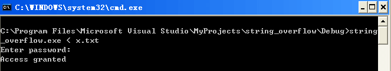

C语言的函数调用过程是怎么样的呢？如何传递参数？运行后如何从函数跳转回来？ ## 利用栈的函数调用方式
在函数调用时，按如下的顺序压入栈： • 函数的参数（按声明的逆序即从右到左的顺序，当然有的编译器采用的是正序） • 函数的返回值（开辟一个空间） • 函数的返回地址（使得调用完成后，eip能正确指向下一条指令） • ebp的值（记录函数调用前的栈底，用于调用结束后恢复原来地址）
下面举例说明main函数调用fun的过程。
调用前
在调用前，首先栈中存放了ebp，用于本程序执行完成后，ebp能回到原来的位置。 然后将局部变量4和5入栈。

调用时
- 函数参数入栈，这里入栈的顺序和参数的声明顺序相反
- 接着开辟个空间，用于存放返回值
- func函数执行后的返回地址压入栈
- 跳转到函数执行
- ebp地址入栈
- ebp = esp (mov ebp,esp)

调用结束，要返回时
函数返回栈如下，将返回地址写入返回值的栈中。
1 | mov esp,ebp ;恢复ESP 同时回收局部变量等空间 |

Attack 实验
我们可以通过栈溢出覆盖返回地址，来达到攻击。比如如下的代码，我们希望输入非goodpass，但是能通过验证。这里是（Access granted）
1 |
|
查看返回地址和ebp
由汇编看到puts("Access granted"); 地址为 0x004010DD
 同时，查看其ebp地址为0x0012ff80
同时，查看其ebp地址为0x0012ff80
输入编辑
由于Password数组长度为12，因此要进行溢出攻击，首先要把它填满，输入任意字符到12个为止。接着，输入ebp的地址，然后在输入返回地址。

攻击测试
打开CMD，使用重定向输入，并运行该程序，即出现了Access granted.
 PS:上述的程序中， 要是没有设置正确的EBP值（随便设置一个）那么也可以出现access granted，但是程序会报错退出。
此外，还有return-into-libc的攻击方式。
防御措施-Canary
Canary（金丝雀）技术是一种用来检测和阻止栈溢出攻击的机制，在运行时为程序提供安全保护。 它一般由编译器实施，在程序运行时在被保护的栈中插入一个难以伪造的值canary （一般为一个32位的随机值，也称为cookie或guard），canary值将在函数返回时被进行检查，如果其被修改则认为发生了溢出。